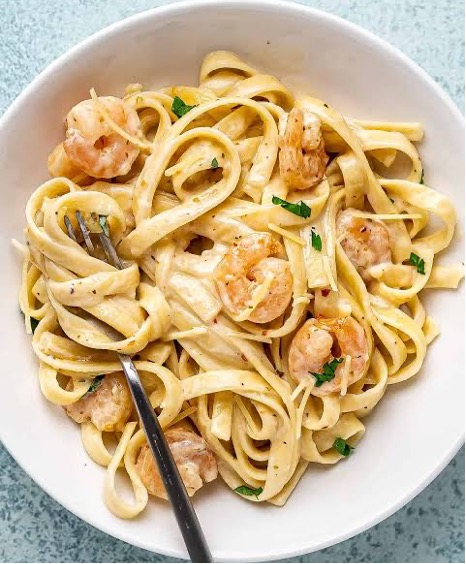
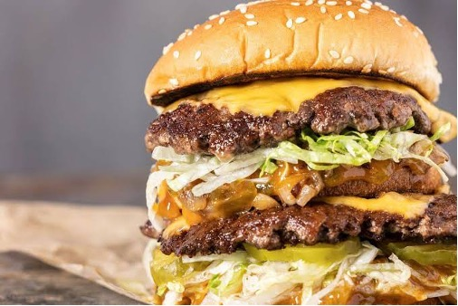
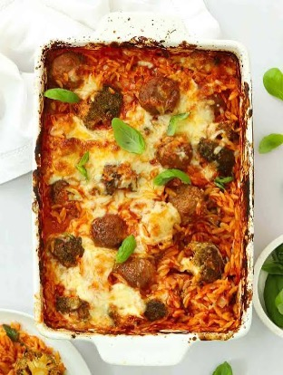

Home
Top 5 Foods
Top 5 Snacks
Top 5 Desserts
Home
Top 5 Foods
Top 5 Snacks
Top 5 Desserts
Top 5 Foods I Like

I love any kind of pasta with tomato sauce. I don’t know what about it is so good, but it’s one of my favorites, and I especially like that it’s easy and cheap to make. I love having it with parmesan cheese and Italian sausage. My favorite restaurant to get this from is probably Noodles & Company.

Shrimp alfredo is so goated. From the creamy sauce to the shrimp, it just makes me want to eat some anytime I think about it. I don’t eat at restaurants much, but if this is on the menu, I’m almost certainly getting it.
Drunken noodles are so good (can you tell that I like noodles). Whenever I go to a Thai restaurant, there is a 100% chance that I order Drunken noodles. The flavors and the spice is just so good, and the noodles have such a good texture and go well with the meat. I do pick out most of the vegetables though ngl.

I love burgers so much, it is my go-to order at any restaurant I go to. There is nothing better than a juicy hamburger with melted cheese, ketchup, pickles, lettuce, and onions. Don’t give me none of that tomato or mayo. It’s difficult to think of the best burger restaurants since I’ve had so many good ones, but a couple that I love are Five Guys and NN Burger.

This is an Italian Orzo Meatball bake. It’s a casserole with orzo noodles, meatballs, red peppers, pieces of bacon, and cheese. I first had this last year when my mom was trying a new recipe, and I was skeptical because I’m a picky eater, but when I tried it I absolutely fell in love with it. Every flavor just goes so well together, I can not put it in words how good it is.